Simulações de Monte Carlo
Edgard Macena Cabral Nº 11820833
Maio 2023
Tarefa A
Na tarefa A, rodamos o modelo de Ising, partindo de uma configuração completamente organizada em duas temperaturas: \(T_{1} = 3/J \) e \(T_{2} = 1/J\).
Programa
Buscamos fazer um código que nos desse a configuração final, além da energia e da magnetização durante o processo.
Ao mesmo tempo, não queremos gastar processamento inutilmente, e, caso observemos que o programa está a várias interações em torno de uma única magnetização, devemos interrompê-lo. Para realizar essas exigências, fizemos o programa a seguir:
program isingModel use isingModule implicit none integer :: i, iMC, desvioMax = 9, magnet = 0 real(8), parameter :: p = 0.5d0 real(8) :: dBeta = 0, beta = 3.d0 ! Beta é dado em 1/J real(8) :: E call iniciaIProxIMenos() call iniciaMalha(p, magnet) call iniciaListaExp(beta) E = calculaE() open(2, file="saida-a-2") do iMC = 0, 3000 call escreveMagE(magnet, E) listaMagnet(mod(iMC, tamListaMag) + 1) = magnet if ( alcancouEquilibrio(desvioMax) .and. iMC > tamListaMag ) then exit end if do i = 0, tempoMC call alteraS(E, magnet) end do beta = beta + dBeta call iniciaListaExp(beta) end do close(2) open(1, file="saida-a-1") call escreveSpins() close(1) end program isingModel module isingModule implicit none integer, parameter :: L = 60, tamListaMag = 15 real(8) :: listaExp(-4 : 4) integer :: iProx(L), iAnt(L), listaMagnet(tamListaMag) integer :: tempoMC = L**2 integer(1) :: spins(L,L) contains ! Função de bernoulli ! Para p = 0.5, se torna um gerador ! de 0 ou 1 com probabilidade identica integer(1) function bernoulli(p) real(8) :: p, numAleatorio call random_number(numAleatorio) if ( numAleatorio < p ) then bernoulli = 1 else bernoulli = -1 end if end function bernoulli integer function intAleatorio(valMax) real :: numAleatorio integer :: valMax call random_number(numAleatorio) intAleatorio = nint(valMax*numAleatorio) end function intAleatorio integer(1) function vizinhos(i, j) integer, intent(in) :: i, j vizinhos = spins(iAnt(i), j) + spins(iProx(i),j) & + spins(i, iAnt(j)) + spins(i, iProx(j)) end function vizinhos logical function alcancouEquilibrio(desvioMax) integer :: desvioMax, magMax, magMin magMax = maxval(listaMagnet) magMin = minval(listaMagnet) alcancouEquilibrio = (magMax - magMin < desvioMax) end function alcancouEquilibrio subroutine iniciaListaExp(beta) integer :: i real(8) :: beta do i = -4, 4 listaExp(i) = exp(-i*beta) end do end subroutine iniciaListaExp subroutine iniciaIProxIMenos() integer :: i do i = 1, L iProx(i) = i + 1 iAnt(i) = i - 1 end do iProx(L) = 1 iAnt(1) = L end subroutine iniciaIProxIMenos subroutine escreveMagE(magnet, E) real(8), intent(in) :: E integer, intent(in) :: magnet write(2,*) magnet, E end subroutine escreveMagE subroutine escreveSpins() character*1 isimb(-1:1) integer :: i, j isimb(1) = '+' isimb(0) = 'E' isimb(-1) = '-' do i = 1, L write(1,*) (isimb(spins(i,j)),j=1,L) end do end subroutine escreveSpins subroutine iniciaMalha(p, magnet) real(8), intent(in) :: p integer :: i, j, magnet do i = 1, L do j = 1, L spins(i, j) = bernoulli(p) if ( spins(i,j) == 1 ) then magnet = magnet + 1 else magnet = magnet - 1 end if end do end do end subroutine iniciaMalha real(8) function calculaE() integer :: i, j real(8) :: dobroE dobroE = 0.d0 do i = 1, L do j = 1, L dobroE = dobroE & - 1.d0*spins(i,j)*vizinhos(i, j) end do end do calculaE = dobroE/2.d0 end function calculaE subroutine alteraS(E, magnet) real(8) :: E, dE integer :: i, j, magnet integer(1) :: deltaM integer(1) :: s real(8) :: probMudar, numAleatorio i = intAleatorio(L-1) + 1 ! Gera numeros entre 1 e 60 j = intAleatorio(L-1) + 1 s = spins(i,j) deltaM = vizinhos(i,j) dE = -1*s*deltaM probMudar = listaExp(s*deltaM) / & (listaExp(s*deltaM) + listaExp(-s*deltaM)) call random_number(numAleatorio) if ( numAleatorio < probMudar) then spins(i, j) = -s magnet = magnet - 2*s E = E - 2*dE end if end subroutine alteraS end module isingModule
Resultados
Obtivemos, para diferentes temperaturas, os seguintes resultado:
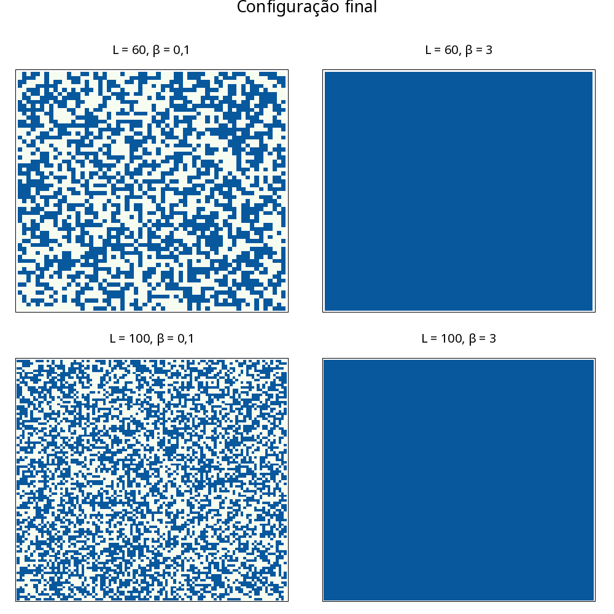
Todos bastante caretas.
\(\beta = 0,1\)
Nesse \(\beta\), correpondente a altas temperaturas, observamos padrões aleatórios. Isso nos demonstra que nessa temperatura, os dipolos magnéticos se comportam quase indepentemente de seus vizinhos.
\(\beta = 3\)
Para um \(\beta\) relacionado a baixas temperaturas, Os spins são fortemente afetados pelos vizinhos próximos, e se torna quase impossível ocorrer alterações num sistema que começa completamente homogêneo.
Tarefa B
Para tarefa B, buscamos representar os processos de recozimento (diminuimos gradualmente a temperatura, sempre mantendo o equilíbrio) e têmpera (resfriamos rapidamente um sistema que estava em temperatura infinita).
Programa
Foi usado o mesmo programa da tarefa A.
Resultados
- Recozimento
Para dois processos de recozimento distintos, obtivemos os seguintes resultados:
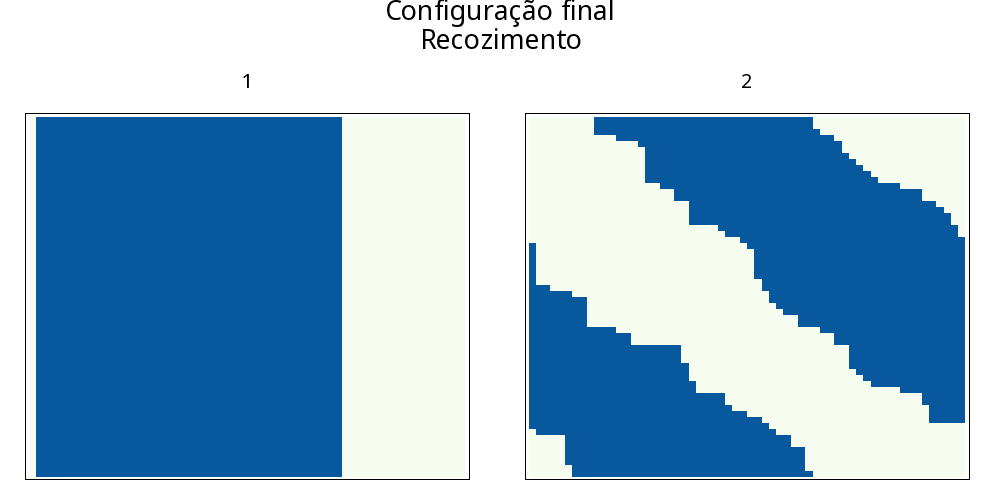
Esses dois sistemas estão relacionados as seguintes curvas de Energia e magnetismo médio:
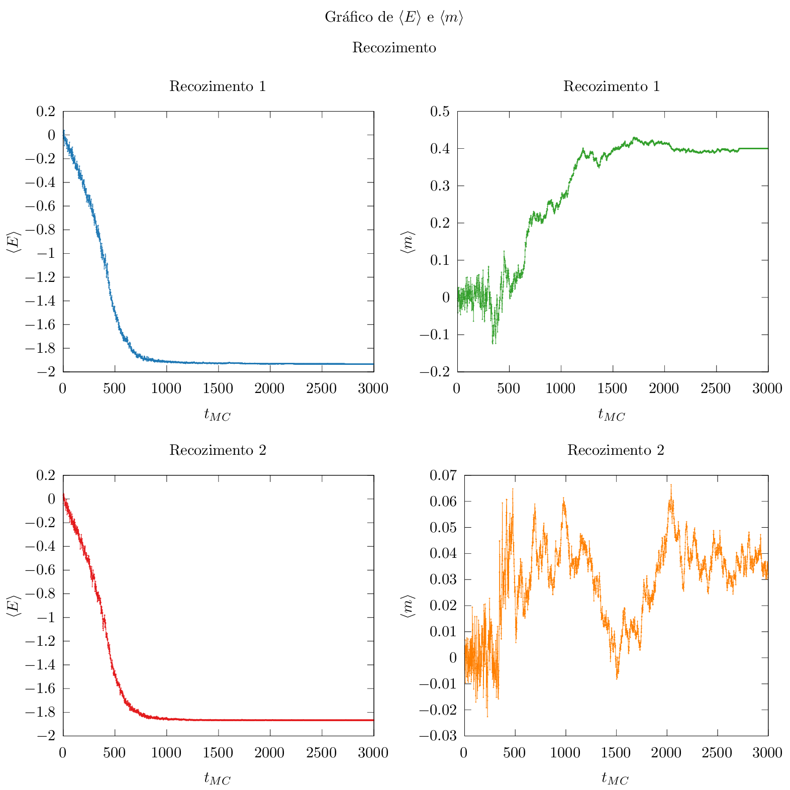
As configurações, embora (de novo) bastante sem graças demonstram características interessantes na energia e magnetização média:
Ambas as magnetizações apresentam variações radicais em torno de \(t_{MC} \approx 400\) (\(\beta = 400/J\)).
Na curva de energia média, observamos uma curva que lembra uma curva logística, com um módulo de energia crescendo cada vez mais rápido até se aproximar do limite de crescimento em 2.
- Têmpera
Para têmpera, obtivemos:
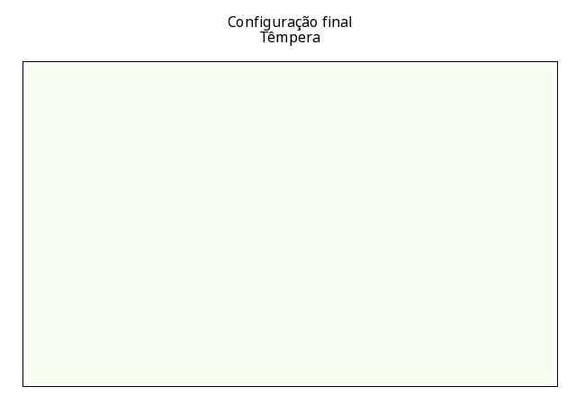
e as curvas de energia associada foram
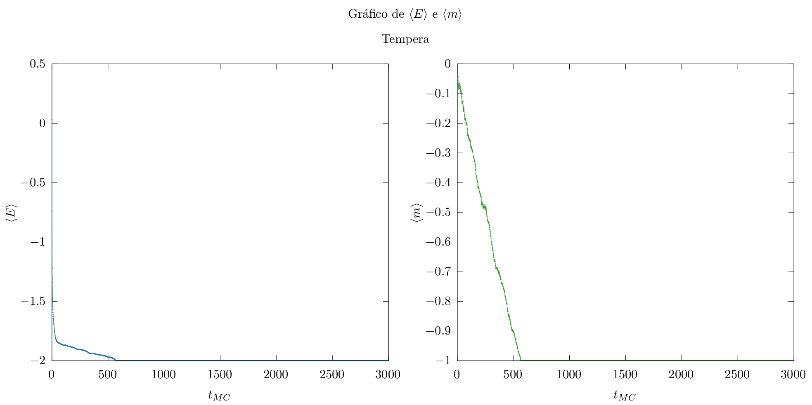
Não há muito de interessante para se falar da têmpera, o sistema rapidamente se organiza numa configuração onde os dipolos estão associados aos seus vizinhos.
Tarefa C1
Na tarefa C1, buscamos estimar a temperatura crítica do nosso sistema, para isso, fizemos um programa que nos permitisse fazer um loop térmico: partindo de uma configuração de alta temperatura esfriar nosso sistema em recozimento e depois aquecê-lo em processo reverso.
Rodamos o programa em malhas de \(60, 80\) e \(100\) dipolos magnéticos, e pra cada uma delas, executamos o recozimento para \(\Delta\beta/\Delta i_{MC}\) sendo \(0,001\) e \(0,0001\)
Programa C1
Rodamos o seguinte programa
program isingModel use isingModule implicit none integer :: i, iMC, magnet = 0 integer :: iMC_Max real(8), parameter :: p = 0.5d0 real(8) :: dBeta = 0.0001, beta = 0.d0, betaMax = 1.75 real(8) :: E iMC_Max = 2*nint(betaMax/dBeta) + 1 call iniciaIProxIMenos() call iniciaMalha(p, magnet) call iniciaListaExp(beta) E = calculaE() open(2, file="saida-1") do iMC = 0, iMC_Max call escreveMagE(beta, magnet, E) do i = 0, tempoMC call alteraS(E, magnet) end do if ( iMC > iMC_Max/2 ) then beta = beta - dBeta else beta = beta + dBeta end if call iniciaListaExp(beta) end do close(2) end program isingModel
Usando o mesmo módulo do programa anterior (Prático!).
Resultados
Conseguimos as seguintes curvas de energia média pra cada configuração,
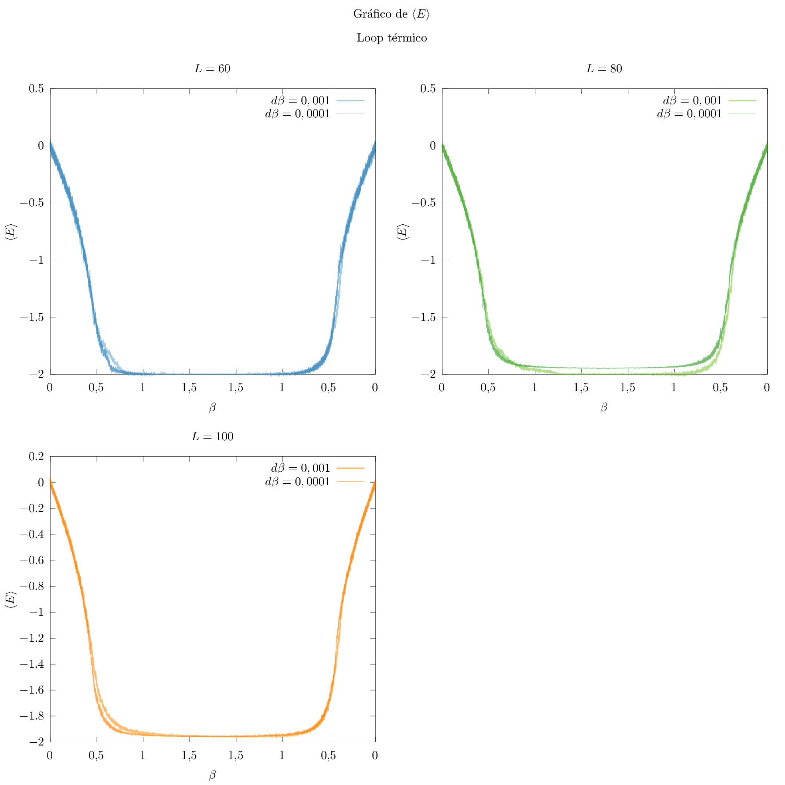
Em que as curvas mais escuras correspondem ao \(d\beta = 0,0001\)
Note que a escala horizontal desse gráfico é um pouco estranha porque ela representa a interação, mas é descrita pela temperatura. Como estamos interessados em fenômenos em torno da temperatura, acreditamos estar ressaltando os dados de interesse, mas vale o aviso.
Junto desses resultados, obtivemos as magnetizações a seguir
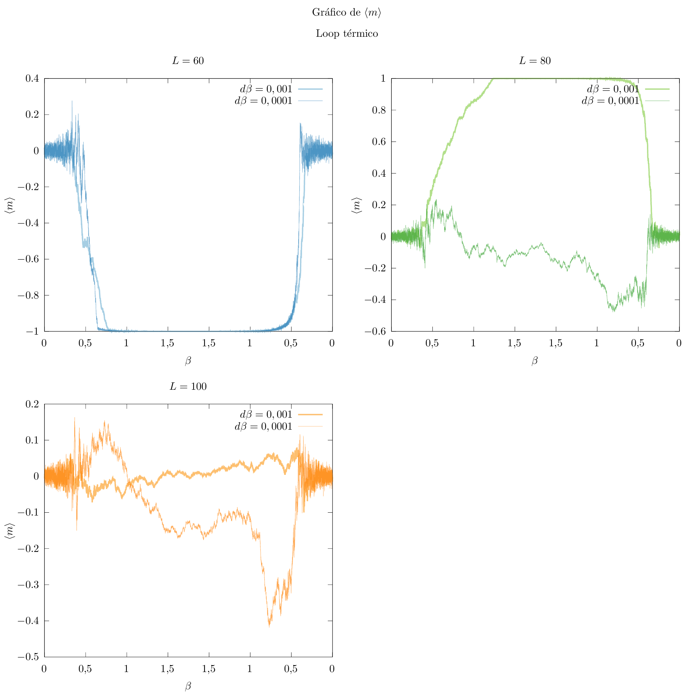
O gráfico das magnetizações requer um pouco mais de cuidado pra ser lido, mas repare o que ressaltamos ainda na B:
Parece haver um atraso entre as variações de \(\langle E \rangle\) e \(\langle m \rangle\)
Tarefa C2
Na tarefa C2, aplicamos o modelo de Ising a várias temperaturas em uma configuração inicial onde metade dos dipolos estão atralados entre si e outra metade está completamente desorganizada.
Buscamos ver em qual temperatura o sistema apresenta maior variação de comportamento
Programa C2
Para executar o programa C2, foram necessárias duas alterações. O programa em si está a seguir
program isingModel use isingModule implicit none integer :: i, iMC, magnet = 0 real(8) :: beta = 0.d0 real(8) :: E read(*,*) beta, L allocate(iProx(L), iAnt(L), spins(L,L)) call iniciaIProxIMenos() call iniciaMalha(magnet) call iniciaListaExp(beta) E = calculaE() open(2, file="saida-c-2") do iMC = 0, 3000 call escreveMagE(beta, magnet, E) do i = 0, 3000 call alteraS(E, magnet) end do call iniciaListaExp(beta) end do close(2) end program isingModel
e a alteração principal ocorreu no módulo, onde escrevemos
subroutine iniciaMalha(magnet) integer :: i, j, magnet do i = 1, L do j = 1, L/2 spins(i, j) = bernoulli(0.5d0) if ( spins(i,j) == 1 ) then magnet = magnet + 1 else magnet = magnet - 1 end if end do do j = L/2 + 1, L spins(i, j) = 1 magnet = magnet + 1 end do end do end subroutine iniciaMalha
Resultados
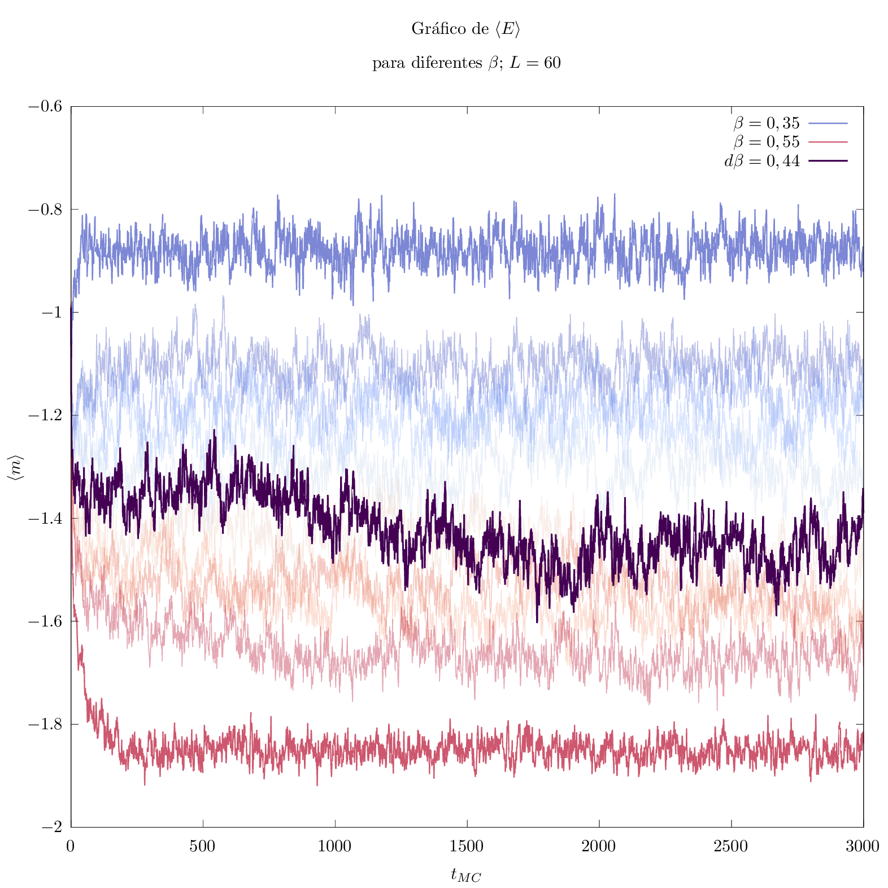
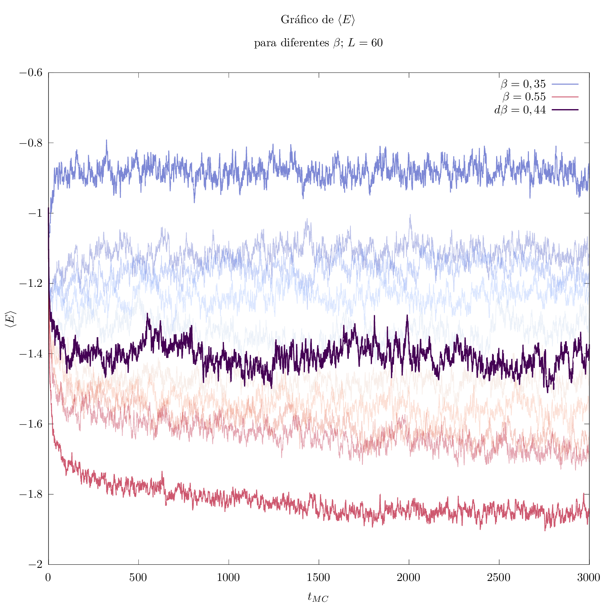
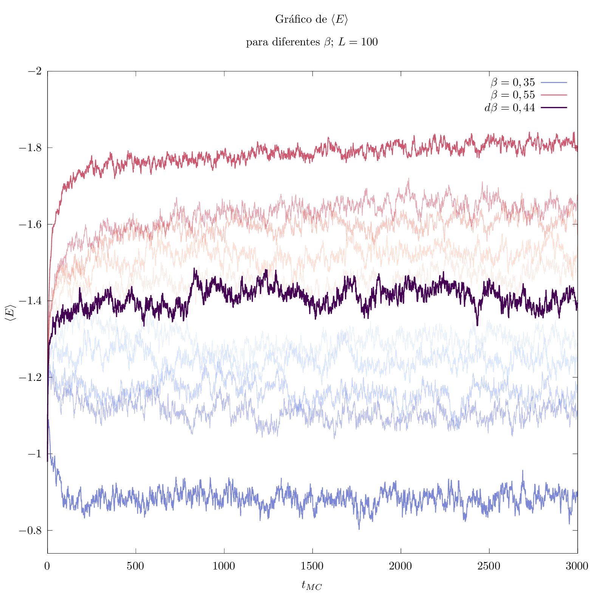
Observamos que as variações são mais extremas, em todos os tamanhos da malha, no entorno de \(\beta = 0,44/J\). Apesar disso, a diferença é muito pequena e é difícil dizer se esse é o valor preciso, como se pode observar pelas linhas claras no gráfico (frias para beta menores, quentes para maiores).
Em compensação, para valores um pouco mais afastados, começamos a ver variações cada vez menores, como é bem visível para linhas escuras, em especial para \(\beta =0,55/J\).
Tarefa D
Nessa tarefa, buscamos estudar o tempo que leva para o sistema com \(\beta > \beta_{c}\).
Programa
Foi usado o seguinte código:
program tarefaD use isingModule implicit none integer :: i, iMC, magnetAnt, magnet = 0 integer :: tempoMC, iQuebraSimetria, vezesQuebrada real(8), parameter :: p = 0.5d0 real(8) :: beta = 0.5d0 real(8) :: E, tMedio open(2, file="saida-d") tMedio = 0 tempoMC = L**2 call iniciaIProxIMenos() call iniciaMalha(p, magnet) call iniciaListaExp(beta) vezesQuebrada = 0 iQuebraSimetria = 0 do iMC = 0, 3000 magnetAnt = magnet do i = 1, tempoMC call alteraS(E, magnet) end do if ( magnet*magnetAnt < 0) then tMedio = tMedio + iQuebraSimetria iQuebraSimetria = 0 vezesQuebrada = vezesQuebrada + 1 end if iQuebraSimetria = iQuebraSimetria + 1 end do write(2,*) L, tMedio/vezesQuebrada close(2) end program tarefaD
Novamente usando o mesmo módulo das tarefas anteriores.
Resultado
Obtivemos, para vários Ls, o seguinte gráfico:
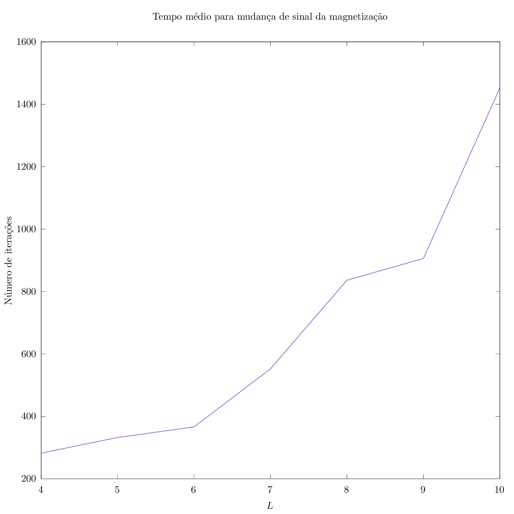
Que tem um comportamento bastante exponencial, à exceção de \(L = 9\).